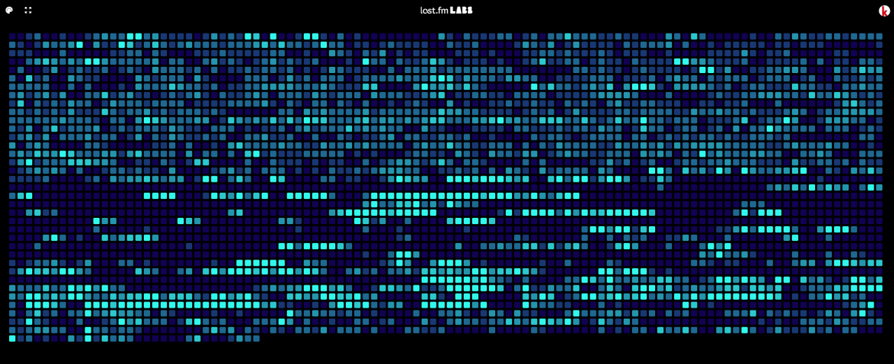

misc is a one pager where I just throw random stuff...
last.fm [labs] is a set of interactive tools, toys and infographics about your listening history. here is mine since 2012.

i really rarely play games but [factorio] is a complete madness in any sense where you can easily spend many hours playing.